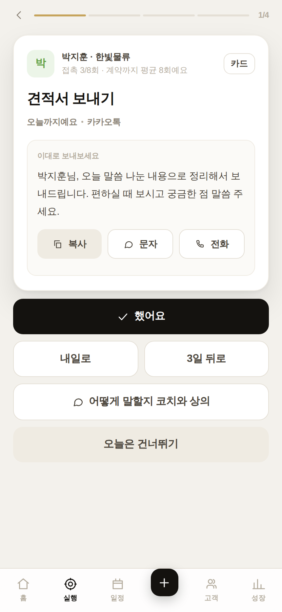
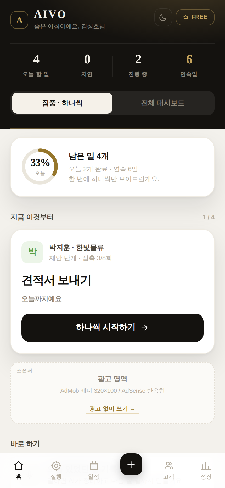
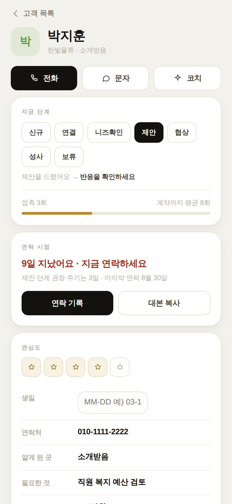
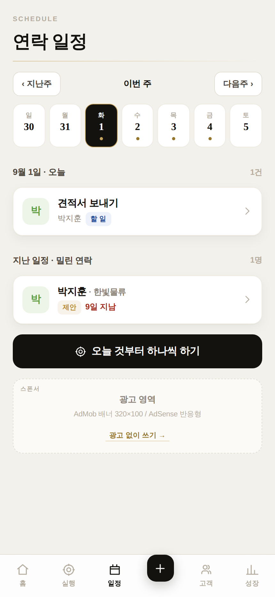
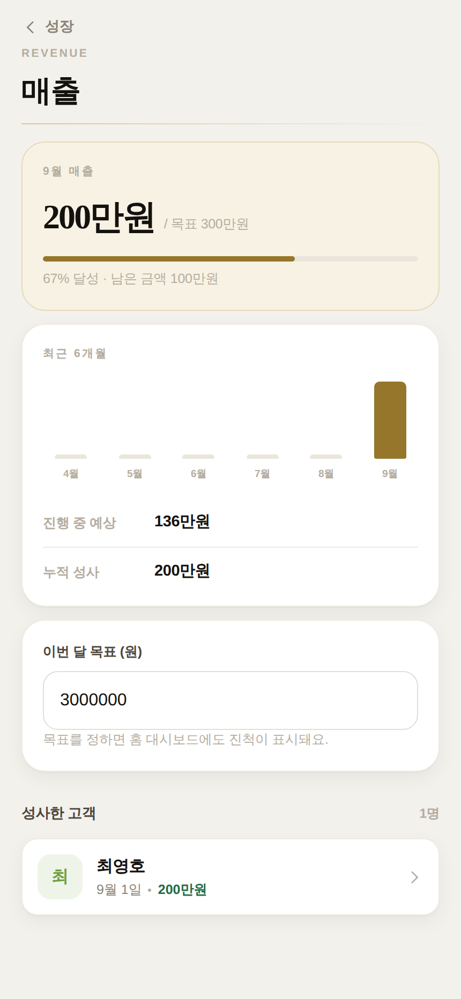

AIVO는 설치가 필요 없습니다. 휴대폰 브라우저로 아래 주소를 열면 바로 시작됩니다. 회원가입도, 비밀번호도 없습니다.
링크를 받으신 분만 열 수 있습니다. 주변에 공유하기 전에 담당자에게 알려주세요.
| 기기 | 방법 |
|---|---|
| 아이폰 | 사파리에서 열기 → 아래 공유 버튼 → 홈 화면에 추가 |
| 안드로이드 | 크롬에서 열기 → 오른쪽 위 ⋮ → 홈 화면에 추가 |
한 번 추가하면 아이콘을 눌러 바로 들어올 수 있고, 주소창 없이 앱처럼 보입니다.
완벽하게 채우려 하지 마세요. 이름 하나만 있어도 고객 등록이 됩니다. 나머지는 만나면서 채워집니다.
AIVO의 핵심은 한 번에 하나만 보여준다는 것입니다. 할 일이 열 개여도 화면에는 언제나 가장 급한 하나만 뜹니다. 그것만 처리하면 다음이 나옵니다.


사람을 만난 날은 ＋ → 오늘 있었던 일 기록에서 말로 남기세요. “오늘 김성호 사장님 만났는데 비용이 부담된다고 하셔서…” 처럼 편하게 말하면 됩니다. 정리·코칭·다음 할 일까지 자동으로 만들어집니다.
했어요 완료 처리 + 연락 기록 + 다음 연락일 자동 설정
내일로 / 3일 뒤로 날짜만 미루기 (기록은 남습니다)
오늘은 건너뛰기 오늘만 숨김 — 내일 다시 나옵니다
| 탭 | 무엇을 하는 곳인가 |
|---|---|
| 홈 | 집중 모드는 다음 할 일 하나만, 전체 대시보드 모드는 파이프라인·매출·지연·활동을 한 화면에. 위 가운데 버튼으로 언제든 전환합니다. |
| 실행 | 오늘 할 일을 한 장씩 넘기며 처리합니다. 빨간 숫자는 기한이 지난 건수입니다. |
| 일정 | 이번 주 달력. 날짜 아래 점이 있으면 그날 할 일이 있다는 뜻입니다. 지난주·다음주로 이동할 수 있습니다. |
| ＋ | 고객 등록, 기록, AI 코치, 콘텐츠, 일괄 등록, 매출 기록, 대본을 바로 여는 단축 메뉴. |
| 고객 | 전체 명단. 급한 순서로 정렬되고, 단계별·지연별로 걸러 볼 수 있습니다. |
| 성장 | 연속 실행일, 잘하는 점·고칠 점, 매출, 주간 리포트, 교육센터, 설정. |
홈 오른쪽 위 달 모양 아이콘을 누르면 어두운 화면으로 바뀝니다. 설정 → 화면에서 기기 설정 따라를 고르면 휴대폰 설정을 따라갑니다.
평일 아침·저녁은 집중 모드로 — 생각하지 말고 시키는 것만 하세요.
주 1회(일요일 저녁 추천)는 전체 대시보드로 — 어디가 막혔는지 보고 다음 주를 계획하세요.

모든 고객은 여섯 단계 중 하나에 놓입니다. 단계마다 해야 할 일과 연락 주기가 다릅니다. 주기가 지나면 앱이 먼저 알려주므로, 언제 연락할지 고민할 필요가 없습니다.
| 단계 | 이런 상태 | 해야 할 일 | 연락 주기 |
|---|---|---|---|
| 신규 | 이름만 아는 분 | 첫 연락을 해보세요 | 2일마다 |
| 연결 | 연락이 닿았어요 | 만날 약속을 잡으세요 | 4일마다 |
| 니즈확인 | 무엇이 필요한지 알았어요 | 맞는 제안을 준비하세요 | 4일마다 |
| 제안 | 제안을 드렸어요 | 반응을 확인하세요 | 3일마다 |
| 협상 | 조건을 맞추는 중 | 결정을 도와주세요 | 2일마다 |
| 성사 | 함께하기로 했어요 | 만족도를 챙기세요 | 14일마다 |
| 보류 | 지금은 때가 아니에요 | 때가 되면 다시 노크 | 45일마다 |
보류로 옮기세요. 45일 뒤 “다시 노크할 때”라고 알려줍니다. 깨끗하게 물러난 고객은 3개월 뒤 가장 좋은 명단이 됩니다.
한 단계에 주기의 3배 넘게 머문 고객입니다. 둘 중 하나를 고르세요 — 다음 단계로 밀거나, 보류로 정리하거나. 어중간하게 두는 것이 가장 나쁩니다.
막혔을 때는 ＋ → AI 코치에게 묻기. 고객이 한 말을 그대로 적으면 뭐라고 답할지 문장으로 만들어 줍니다. 고객 카드 안에서 열면 그 고객의 기록을 참고해 답합니다.
첫 연락, 무응답, 거절, 가격, 결정권자, 클로징, 재구매, 소개 요청 등 12가지. 받는 분을 고르면 이름이 자동으로 채워지고, 문자 앱으로 바로 보낼 수 있습니다.
한 문장만 내 말투로 바꾸세요. 그 한 줄이 “복사한 티”를 없앱니다.


고객 등록할 때 예상 금액을 넣고, 계약되면 단계를 성사로 바꾸세요. 그 순간 금액과 날짜가 확정되어 이번 달 매출에 잡힙니다. 성장 → 매출 관리에서 이번 달 목표를 정하면 홈 대시보드에도 진척이 표시됩니다.
한 주 동안의 접촉 수, 완료한 실행, 새로 만난 사람, 성사 건수와 금액, 다음 주 예정, 그리고 “잘하신 것 / 고칠 것” 총평을 한 장으로 보여줍니다.
| 항목 | 무료 | 프로 |
|---|---|---|
| 고객 등록 | 15명 | 무제한 |
| AI 코칭·분석 | 하루 5회 | 무제한 |
| 광고 | 노출 | 없음 |
| 교육과정 | 1단계 | 3단계 전부 |
| 상황별 대본 | 3종 | 12종 |
| 매출 심화·주간 리포트 | — | 포함 |
| 팀 관리 · 내보내기 | — | 포함 |
베타 기간에는 결제 없이 프로를 켜고 끌 수 있습니다. 오른쪽 위 FREE 배지를 눌러 프로 시작하기 → 다시 무료로 되돌리기. 양쪽 다 꼭 써보세요.
| 일차 | 해볼 것 |
|---|---|
| 1일차 | 온보딩 → 실제 고객 5명 등록 (일괄 등록도 한 번 써보기) |
| 2일차 | 아침에 실행 3건 처리 → 대본 복사해서 실제로 보내보기 |
| 3일차 | 만난 일을 음성으로 기록 → 코칭과 자동 생성된 할 일 확인 |
| 4일차 | 고객 단계 옮겨보기 · 생일 넣어보기 · 빠른 메모 남기기 |
| 5일차 | 프로로 전환 → 대본 12종·주간 리포트·매출 확인 후 무료로 되돌리기 |
| 6일차 | 어두운 화면으로 바꿔서 하루 사용 · 홈 화면에 추가해서 써보기 |
| 7일차 | 전체 대시보드에서 한 주 돌아보기 → 아래 피드백 보내기 |
피드백 보내실 곳 — 담당자에게 카톡 또는 메일로 보내주세요. 한 줄이라도 좋습니다. “그냥 안 쓰게 되더라”가 가장 중요한 피드백입니다.